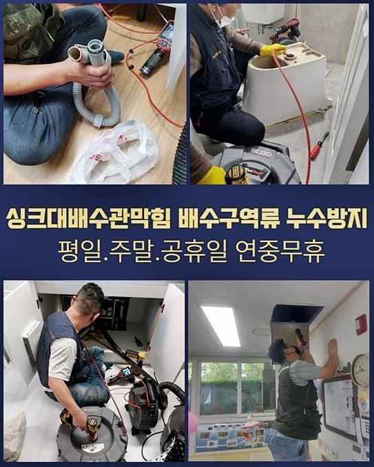
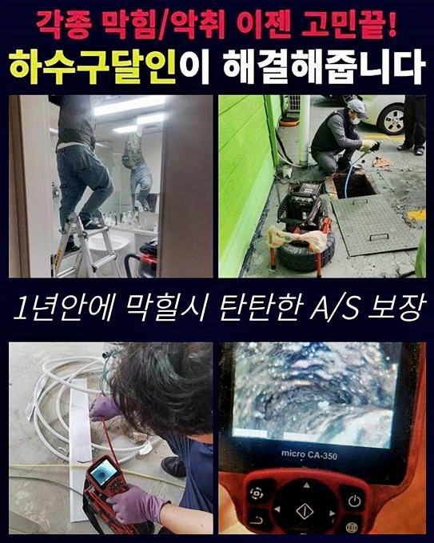
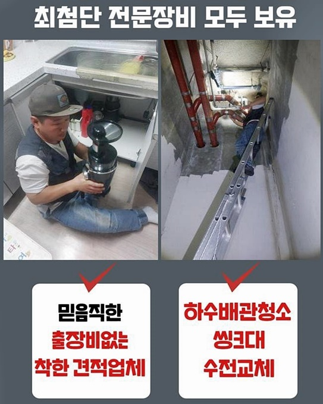
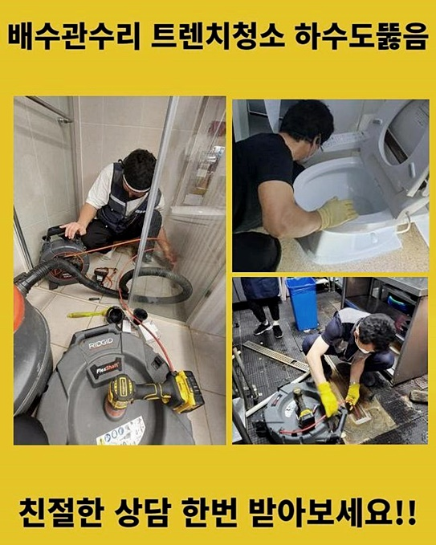
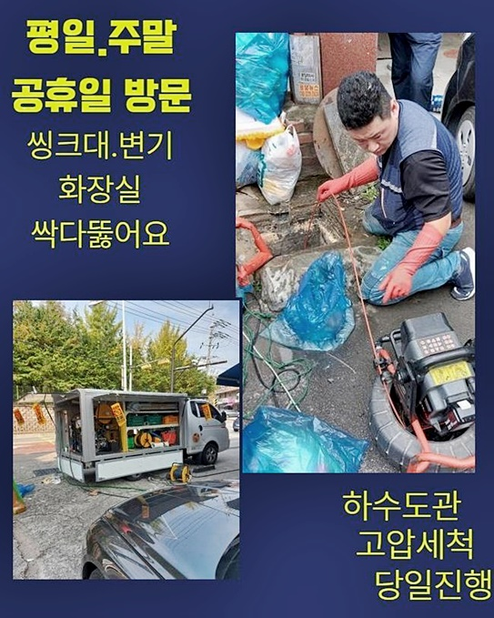
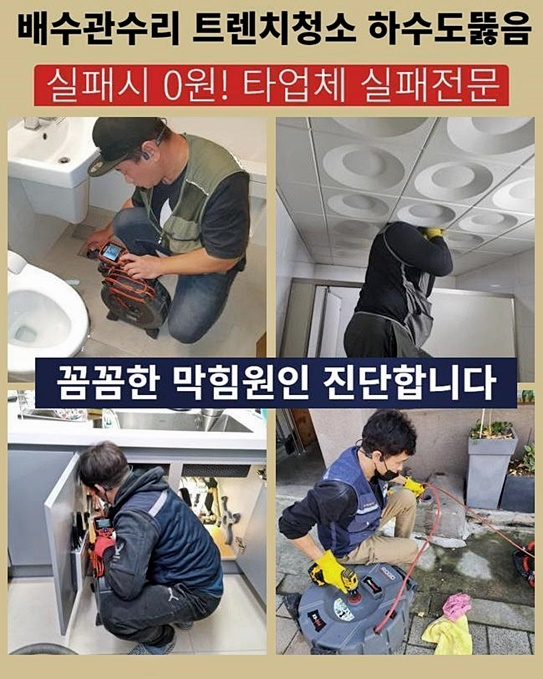

🏠 은평구 불광동화장실하수구뚫음 신사동 집수정청소 통수전문
용인시 처인구 누수수리 전문 시공 후기

📋 작업 개요
- 위치: 용인시 처인구, 수원시 영통구, 화성시 동탄
- 서비스 유형: 누수수리, 고압세척, 내시경점검
- 작업 일시:
- 업체명: 하수구수사대 (010-5615-2118)
🔍 문제 상황
은평구 불광동화장실하수구뚫음 신사동 집수정청소 통수전문
주거하는 장소에서 하수결함들이 생겨나도 당황할 수 밖에 없겠으나 지속적으로 수십수백이 다녀가는 공용으로 쓰는에서 막히게되는 경우가 존재할 시 조속한 작업들이 필요하겠죠?
금일의 증세도 곧장 당도하여 시정해냈습니다
상업목적의 건축물은 내부에 주거지나 일반 기업체 식당 등 여러 업종자체가 자리하고있기에 배수장애가 야기되면 고민에만 그치는것이 아니라 다양한 피해들로 우리에게 다가옵니다
이에 해당하는 애로사항을 최소화시키기 위하여 신속히 막혀버린 장소로 내방했습니다
내방하여 관찰하니 1층의 화장실에서 역류증세들도 발생해 배수구를 세심히 관찰했는데요
배수관이 있는 생활을 지속하는 장소에서 생기게되는 물빠짐 관련 사고는 꼼꼼한 원인들의 조사가 요구되요
배수구 초입이 막힌거면 간단한 방법을 통할 수 있지만 역류증세들도 불거진것이면 점검을 거쳐 원인규명이 첫번째로 필요해요
이시점에서 신경써야되는게 성공적 작업이 이행하는 전문진에게 의뢰하는게 좋습니다
물들이 솟아오르는 증세가 발생되었을때는 준비한 내시경카메라를 삽입해 하수관을 관찰해주고 문제들의 까닭을 잠재우는 게 우선됩니다
그리고 도착한다음 실시한 단계는 석션장치로 단순하게 막힌건지 확인해봤습니다
심각증세의 사태일땐 석션으로도 배수를 못하여 집수시설로 작업지 변경이 실시되어야하는 사안들도 있답니다

🔎 원인 분석
💡 전문가 진단: 정밀 진단 장비를 사용하여 슬러지의 고착 여부를 판명하고 타격/세척 작업을 실시했습니다.
이럴땐 메인관로로 뻗어있는 결속부분에 축적되어 배관공사를 진행해주기도 해요
그렇지만 진단을 해보니 한 관로만 배수장애가 발생된게 아닌것으로 판단했어요
한 라인의 증상으로만 치부하지 못하면 공용관로가 비정상일 가능성들이 상당하겠습니다
다수의 인원들이 사용하고있는 상가인 탓에 여러 사안들을 생각하지 않는것이 쉽지않았죠
일부분이 아닌 공동관의 결함이라면 곧장 꼼꼼한 검수 단계들이 진행되어야했죠
석션으로 부유물을 흡입시켜주어 메인관로로 이어진 지점의 문제들을 체크했는데요
안내한것처럼 해당 지점들에 잔해물이 축적되어 증상이 발생되었을 가능성이 있기때문이죠
그러하나 여전히 꿈쩍하지않았던 상태였기에 내시경장치를 사용하여 하수도를 들여다보았는데요
내시경의 경우 이토록 물이 통과하는데에 심상치않은 모습이 목격되었을때 있어야하는 기기입니다
잔재들이 축적되는 배수관일 경우 가정과 요식업체 어디든지 검사가 가능해요
대장내시경 절차를 생각하면 고객님에게서는 이해하실 수 있어요
케이블 앞쪽에 부착된 카메라 부품으로 영상을 통해 지속적으로 확인해주며 왜 이렇게 되었나 까닭을 찾을 수 있습니다
막히는게 생겨나 사전 준비없이 무분별하게 의뢰하면 냅다 작업하면서 작업에 대한 과정을 정확히 파악이 안된채로 지출만 진행시키는 불상사가 있을지도 몰라요

🔧 작업 과정
이러하기에 일러드리는 사항을 보셔서 어느 상황에 무슨 기기를 이용하여야되는지 조금은 알고있는게 도움으로 돌아올거에요
전문기기를 쓴다거나 무작정 작업규모가 커질것이라며 작업들을 진행시키는 곳들을 가를 수 있어요
내시경장치의 머리쪽을 막고있었던 이물들이 구간별로 많았던걸로 목격했기에 샤프트기기를 운용하여 문제되는 부분에 청소들이 속행되어야 했어요
라인들이 기능장애를 보이는 사례는 한두가지가 아닌데 해당 현장에서처럼 전체관로가 고민을 보이면 스스로의 힘으로는 해결하는게 힘들죠
그저 해결되기를 바라기에 앞서 신속히 초반에 진단을 거쳐 잔재를 제거시키는 전문적인 서비스를 거치는게 누수나 역류의 문제도 피할 수 있는데요
샤프트기기는 라인에 돌아가는 체인들이 연결되어 있어요
사슬부는 작동 시 원운동을 하게되며 잔해를 청소하거나 회수용 부품으로 갈아끼워 밖으로 배출시킵니다
하수구 뚫는 작업이라함은 도로에서나 일반 사업체등의 장소에서 주로 행해지는 작업인데요
이 작업이라함은 안에서부터 야기되는 잔해물과 슬러지를 청소시켜 배수기능들을 높여주고 위생부분에 있어서도 이득이 되죠
이에 해당하는 작업이라함은 전문성을 갖춘 이가 진행하고 도시환경 측에 속한 시설물이나 바깥에 자리잡은 관로라면 관리되며 세척해줘야해요
안전한 작업방법으로 재발률을 줄이면서 악취와 같은 고민을 피해낼 수 있겠습니다
저희전문진은 시공해줄땐 내시경도구를 투입시켜서 증상 시작의 스팟을 다시 관찰하여 오차없이 체크해보는 과정으로 신속허나 오차없이 작업해드립니다
그렇기에 해당 증상이 발발했다면 어떤곳을 의뢰하는게 최선일지 심사숙고해보세요!
1번 조속한 방문 2. 작업 내용 공유 세번째 알맞는 기기들의 이용
고객의 입장에서 위같은 사항만 확인하더라도 비용을 절약하면서 아무래도 빠른 청소가 가능한데요
지속적으로 하수라인 결함을 관찰하여 부유물을 사라지게만들었죠
작업이 끝났다면 어지러워진 현장을 마무리할 순서인데요
그리고 눈여겨 볼 것은 마무리과정을 어떤식으로 진행하느냐와 연관한 부분인데요
각 라인을 깨끗히 세척한 뒤 부속품도 제자리로 돌려놓아야하기에 이러한 수순도 오차없이 진행했죠
저희로 말씀드리면 결과를 보면 느끼시겠지만 전문가스러운 수리를 만끽하실 수 있고 오차없는 작업해요


✅ 작업 완료
이런 자신감으로 동일 증세가 발생되어 문의하면 1년의 기간에 걸쳐 AS서비스를 지원합니다
그렇지만 의뢰인분의 과실사안이 없게 배수 관련 문제에 있어서 예방을 하시는것이 중요합니다
배수관으로 빠져나갈법한 잔해가라던가 기름들은 신경써주어 피해서 배수관으로 수도들만 배출되게 거름망부속을 잘 유지시키는것에 신경쓰시기를 바라요
저희전문가의 AS서비스 실시는 자신있죠
오늘도 명확히 작업을 수행하고 청결하게 마쳐준 현장이였는데요
작업과 관련한 사항은 고객에게 면밀한 설명으로 현 시점의 중대 사안들을 상담하고있기에 빠른 배수를 원하실 땐 편하실때 불편을 토로해보세요!



⚠️ 하수구 배관 막힘 예방 및 관리 가이드
- ✅ 머리카락, 비닐, 물티슈 등 물에 분해되지 않는 이물질은 절대 흘려보내지 마세요.
- ✅ 기름기 많은 식기는 설거지 전 키친타올로 먼저 기름때를 닦아내세요.
- ✅ 주기적으로 배수구에 뜨거운 물을 가득 부어주어 유지방 고착을 방지하세요.
- ✅ 작업 후 1년 이내 재발 시 무상 A/S 보증 서비스를 제공합니다.
💡 핵심 정리
- 확실한 장비 작업(내시경 점검 및 샤프트 스케일링)으로 원인을 뿌리 뽑습니다.
- 작업 후 1년 이내에 동일한 부위 재발 시 100% 무상 A/S 서비스를 보장합니다.
- 서울 · 경기 · 인천 전 지역에 24시간 언제든 긴급 출동할 수 있도록 항시 대기 중입니다.
❓ 자주 묻는 질문 (FAQ)
🚨 용인시 처인구 누수수리 문제로 고민이신가요?
정확한 원인 진단과 확실한 시공으로 재발 없는 해결을 약속드립니다.
24시간 긴급 출동 | 서울 · 경기 · 인천 전지역 | 1년 내 재발 시 무상 A/S